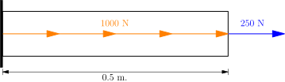
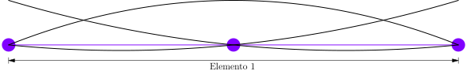
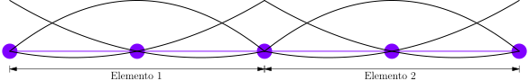

\( L = 0.5 \ \text{m} \), \( A = 6.25 \times 10^{-4} \ \text{m}^{2} \) y \( E = 200 \ \text{MPa} \)


funciones de forma $$ \begin{align*} \mathbf{N} &= \begin{bmatrix} \frac{x_{2} x_{3}}{x_{1}^{2} - x_{1} x_{2} -x_{1} x_{3} + x_{2} x_{3}} - \frac{x_{2} + x_{3}}{x_{1}^{2} - x_{1} x_{2} - x_{1} x_{3} + x_{2} x_{3}} x + \frac{1}{x_{1}^{2} - x_{1} x_{2} - x_{1} x_{3} + x_{2} x_{3}} x^{2} \\ - \frac{x_{1} x_{3}}{x_{1} x_{2} - x_{1} x_{3} - x_{2}^{2} + x_{2} x_{3}} + \frac{x_{1} + x_{3}}{x_{1} x_{2} - x_{1} x_{3} - x_{2}^{2} + x_{2} x_{3}} x - \frac{1}{x_{1} x_{2} - x_{1} x_{3} - x_{2}^{2} + x_{2} x_{3}} x^{2} \\ \frac{x_{1} x_{2}}{x_{1} x_{2} - x_{1} x_{3} - x_{2} x_{3} + x_{3}^{2}} - \frac{x_{1} + x_{2}}{x_{1} x_{2} - x_{1} x_{3} - x_{2} x_{3} + x_{3}^{2}} x + \frac{1}{x_{1} x_{2} - x_{1} x_{3} - x_{2} x_{3} + x_{3}^{2}} x^{2} \end{bmatrix}^{\mathrm{T}} \\ &= \begin{bmatrix} \frac{0.25 (0.5)}{0^{2} - 0 (0.25) - 0 (0.5) + 0.25 (0.5)} - \frac{0.25 + 0.5}{0^{2} - 0 (0.25) - 0 (0.5) + 0.25 (0.5)} x + \frac{1}{0^{2} - 0 (0.25) - 0 (0.5) + 0.25 (0.5)} x^{2} \\ - \frac{0 (0.5)}{0 (0.25) - 0 (0.5) - 0.25^{2} + 0.25 (0.5)} + \frac{0 + 0.5}{0 (0.25) - 0 (0.5) - 0.25^{2} + 0.25 (0.5)} x - \frac{1}{0 (0.25) - 0 (0.5) - 0.25^{2} + 0.25 (0.5)} x^{2} \\ \frac{0 (0.25)}{0 (0.25) - 0 (0.5) - 0.25 (0.5) + 0.5^{2}} - \frac{0 + 0.25}{0 (0.25) - 0 (0.5) - 0.25 (0.5) + 0.5^{2}} x + \frac{1}{0 (0.25) - 0 (0.5) - 0.25 (0.5) + 0.5^{2}} x^{2} \end{bmatrix}^{\mathrm{T}} \\ &= \begin{bmatrix} 1 - 6 x + 8 x^{2} & 8 x - 16 x^{2} & -2 x + 8 x^{2} \end{bmatrix} \end{align*} $$
deformaciones $$ \begin{equation*} \mathbf{B} = \frac{d \mathbf{N}}{d x} = \begin{bmatrix} -6 + 16 x & 8 - 32 x & -2 + 16 x \end{bmatrix} \end{equation*} $$
matriz constitutiva $$ \begin{equation*} \mathbf{D} = E \ A = 1.25 \times 10^{5} \ [\text{N}] \end{equation*} $$
reemplazando $$ \begin{equation*} \int_{0}^{0.5} \begin{bmatrix} -6 + 16 x \\ 8 - 32 x \\ -2 + 16 x \end{bmatrix} \begin{bmatrix} 1.25 \times 10^{5} \end{bmatrix} \begin{bmatrix} -6 + 16 x & 8 - 32 x & -2 + 16 x \end{bmatrix} dx \begin{bmatrix} u_{1} \\ u_{2} \\ u_{3} \end{bmatrix} = \int_{0}^{0.5} 1000 \begin{bmatrix} 1 - 6 x + 8 x^{2} \\ 8 x - 16 x^{2} \\ -2 x + 8 x^{2} \end{bmatrix} dx + \begin{bmatrix} F_{1} \\ F_{2} \\ F_{3} \end{bmatrix} \end{equation*} $$
integrando $$ \begin{equation*} \begin{bmatrix} 5.83 \times 10^{5} & -6.67 \times 10^{5} & 8.33 \times 10^{4} \\ -6.67 \times 10^{5} & 1.33 \times 10^{6} & -6.67 \times 10^{5} \\ 8.33 \times 10^{4} & -6.67 \times 10^{5} & 5.83 \times 10^{5} \end{bmatrix} \begin{bmatrix} u_{1} \\ u_{2} \\ u_{3} \end{bmatrix} = \begin{bmatrix} 83.33 \\ 333.33 \\ 83.33 \end{bmatrix} + \begin{bmatrix} F_{1} \\ F_{2} \\ F_{3} \end{bmatrix} \end{equation*} $$
reemplazando las condiciones de contorno $$ \begin{equation*} \begin{bmatrix} 5.83 \times 10^{5} & -6.67 \times 10^{5} & 8.33 \times 10^{4} \\ -6.67 \times 10^{5} & 1.33 \times 10^{6} & -6.67 \times 10^{5} \\ 8.33 \times 10^{4} & -6.67 \times 10^{5} & 5.83 \times 10^{5} \end{bmatrix} \begin{bmatrix} 0 \\ u_{2} \\ u_{3} \end{bmatrix} = \begin{bmatrix} 83.33 \\ 333.33 \\ 83.33 \end{bmatrix} + \begin{bmatrix} F_{1} \\ 0 \\ 250 \end{bmatrix} \end{equation*} $$
sumando $$ \begin{equation*} \begin{bmatrix} 5.83 \times 10^{5} & -6.67 \times 10^{5} & 8.33 \times 10^{4} \\ -6.67 \times 10^{5} & 1.33 \times 10^{6} & -6.67 \times 10^{5} \\ 8.33 \times 10^{4} & -6.67 \times 10^{5} & 5.83 \times 10^{5} \end{bmatrix} \begin{bmatrix} 0 \\ u_{2} \\ u_{3} \end{bmatrix} = \begin{bmatrix} F_{1} + 83.33 \\ 333.33 \\ 333.33 \end{bmatrix} \end{equation*} $$
resolviendo $$ \begin{align*} F_{1} &= -750 \ [\text{N}] \\ u_{2} &= 0.00125 \ [\text{m}] \\ u_{3} &= 0.002 \ [\text{m}] \end{align*} $$
Desplazamientos, deformaciones y esfuerzos
desplazamientos $$ \begin{equation*} u = \mathbf{N} \ \mathbf{u} = \begin{bmatrix} 1 - 6 x + 8 x^{2} & 8 x - 16 x^{2} & -2 x + 8 x^{2} \end{bmatrix} \begin{bmatrix} 0 \\ 0.00125 \\ 0.002 \end{bmatrix} = 0.006 x - 0.004 x^{2} \ [\text{m}] \end{equation*} $$
deformación $$ \begin{equation*} \varepsilon = \mathbf{B} \ \mathbf{u} = \begin{bmatrix} -6 + 16 x & 8 - 32 x & -2 + 16 x \end{bmatrix} \begin{bmatrix} 0 \\ 0.00125 \\ 0.002 \end{bmatrix} = 0.006 - 0.008 x \end{equation*} $$
esfuerzo $$ \begin{equation*} \sigma = E \ \varepsilon = 1.2 - 1.6 x \ [\text{MPa}] \end{equation*} $$

Elemento 1
funciones de forma $$ \begin{align*} \mathbf{N} &= \begin{bmatrix} \frac{x_{2} x_{3}}{x_{1}^{2} - x_{1} x_{2} -x_{1} x_{3} + x_{2} x_{3}} - \frac{x_{2} + x_{3}}{x_{1}^{2} - x_{1} x_{2} - x_{1} x_{3} + x_{2} x_{3}} x + \frac{1}{x_{1}^{2} - x_{1} x_{2} - x_{1} x_{3} + x_{2} x_{3}} x^{2} \\ - \frac{x_{1} x_{3}}{x_{1} x_{2} - x_{1} x_{3} - x_{2}^{2} + x_{2} x_{3}} + \frac{x_{1} + x_{3}}{x_{1} x_{2} - x_{1} x_{3} - x_{2}^{2} + x_{2} x_{3}} x - \frac{1}{x_{1} x_{2} - x_{1} x_{3} - x_{2}^{2} + x_{2} x_{3}} x^{2} \\ \frac{x_{1} x_{2}}{x_{1} x_{2} - x_{1} x_{3} - x_{2} x_{3} + x_{3}^{2}} - \frac{x_{1} + x_{2}}{x_{1} x_{2} - x_{1} x_{3} - x_{2} x_{3} + x_{3}^{2}} x + \frac{1}{x_{1} x_{2} - x_{1} x_{3} - x_{2} x_{3} + x_{3}^{2}} x^{2} \end{bmatrix}^{\mathrm{T}} \\ &= \begin{bmatrix} \frac{0.125 (0.25)}{0^{2} - 0 (0.125) -0 (0.25) + 0.125 (0.25)} - \frac{0.125 + 0.25}{0^{2} - 0 (0.125) - 0 (0.25) + 0.125 (0.25)} x + \frac{1}{0^{2} - 0 (0.125) - 0 (0.25) + 0.125 (0.25)} x^{2} \\ - \frac{0 (0.25)}{0 (0.125) - 0 (0.25) - 0.125^{2} + 0.125 (0.25)} + \frac{0 + 0.25}{0 (0.125) - 0 (0.25) - 0.125^{2} + 0.125 (0.25)} x - \frac{1}{0 (0.125) - 0 (0.25) - 0.125^{2} + 0.125 (0.25)} x^{2} \\ \frac{0 (0.125)}{0 (0.125) - 0 (0.25) - 0.125 (0.25) + 0.25^{2}} - \frac{0 + 0.125}{0 (0.125) - 0 (0.25) - 0.125 (0.25) + 0.25^{2}} x + \frac{1}{0 (0.125) - 0 (0.25) - 0.125 (0.25) + 0.25^{2}} x^{2} \end{bmatrix}^{\mathrm{T}} \\ &= \begin{bmatrix} 1 - 12 x + 32 x^{2} & 16 x - 64 x^{2} & -4 x + 32 x^{2} \end{bmatrix} \end{align*} $$
deformaciones $$ \begin{equation*} \mathbf{B} = \frac{d \mathbf{N}}{d x} = \begin{bmatrix} -12 + 64 x & 16 - 128 x & -4 + 64 x \end{bmatrix} \end{equation*} $$
matriz constitutiva $$ \begin{equation*} \mathbf{D} = E \ A = 1.25 \times 10^{5} \ [\text{N}] \end{equation*} $$
reemplazando $$ \begin{equation*} \int_{0}^{0.25} \begin{bmatrix} -12 + 64 x \\ 16 - 128 x \\ -4 + 64 x \end{bmatrix} \begin{bmatrix} 1.25 \times 10^{5} \end{bmatrix} \begin{bmatrix} -12 + 64 x & 16 - 128 x & -4 + 64 x \end{bmatrix} dx \begin{bmatrix} u_{1} \\ u_{2} \\ u_{3} \end{bmatrix} = \int_{0}^{0.25} 1000 \begin{bmatrix} 1 - 12 x + 32 x^{2} \\ 16 x - 64 x^{2} \\ -4 x + 32 x^{2} \end{bmatrix} dx + \begin{bmatrix} F_{1} \\ F_{2} \\ F_{3} \end{bmatrix} \end{equation*} $$
integrando $$ \begin{equation*} \begin{bmatrix} 1.17 \times 10^{6} & -1.33 \times 10^{6} & 1.67 \times 10^{5} \\ -1.33 \times 10^{6} & 2.67 \times 10^{6} & -1.33 \times 10^{6} \\ 1.67 \times 10^{5} & -1.33 \times 10^{6} & 1.17 \times 10^{6} \end{bmatrix} \begin{bmatrix} u_{1} \\ u_{2} \\ u_{3} \end{bmatrix} = \begin{bmatrix} 41.67 \\ 166.67 \\ 41.67 \end{bmatrix} + \begin{bmatrix} F_{1} \\ F_{2} \\ F_{3} \end{bmatrix} \end{equation*} $$
Elemento 2
funciones de forma $$ \begin{align*} \mathbf{N} &= \begin{bmatrix} \frac{x_{2} x_{3}}{x_{1}^{2} - x_{1} x_{2} - x_{1} x_{3} + x_{2} x_{3}} - \frac{x_{2} + x_{3}}{x_{1}^{2} - x_{1} x_{2} - x_{1} x_{3} + x_{2} x_{3}} x + \frac{1}{x_{1}^{2} - x_{1} x_{2} - x_{1} x_{3} + x_{2} x_{3}} x^{2} \\ - \frac{x_{1} x_{3}}{x_{1} x_{2} - x_{1} x_{3} - x_{2}^{2} + x_{2} x_{3}} + \frac{x_{1} + x_{3}}{x_{1} x_{2} - x_{1} x_{3} - x_{2}^{2} + x_{2} x_{3}} x - \frac{1}{x_{1} x_{2} - x_{1} x_{3} - x_{2}^{2} + x_{2} x_{3}} x^{2} \\ \frac{x_{1} x_{2}}{x_{1} x_{2} - x_{1} x_{3} - x_{2} x_{3} + x_{3}^{2}} - \frac{x_{1} + x_{2}}{x_{1} x_{2} - x_{1} x_{3} - x_{2} x_{3} + x_{3}^{2}} x + \frac{1}{x_{1} x_{2} - x_{1} x_{3} - x_{2} x_{3} + x_{3}^{2}} x^{2} \end{bmatrix}^{\mathrm{T}} \\ &= \begin{bmatrix} \frac{0.375 (0.5)}{0.25^{2} - 0.25 (0.375) - 0.25 (0.5) + 0.375 (0.5)} - \frac{0.375 + 0.5}{0.25^{2} - 0.25 (0.375) - 0.25 (0.5) + 0.375 (0.5)} x + \frac{1}{0.25^{2} - 0.25 (0.375) - 0.25 (0.5) + 0.375 (0.5)} x^{2} \\ - \frac{0.25 (0.5)}{0.25 (0.375) - 0.25 (0.5) - 0.375^{2} + 0.375 (0.5)} + \frac{0.25 + 0.5}{0.25 (0.375) - 0.25 (0.5) - 0.375^{2} + 0.375 (0.5)} x - \frac{1}{0.25 (0.375) - 0.25 (0.5) - 0.375^{2} + 0.375 (0.5)} x^{2} \\ \frac{0.25 (0.375)}{0.25 (0.375) - 0.25 (0.5) - 0.375 (0.5) + 0.5^{2}} - \frac{0.25 + 0.375}{0.25 (0.375) - 0.25 (0.5) - 0.375 (0.5) + 0.5^{2}} x + \frac{1}{0.25 (0.375) - 0.25 (0.5) - 0.375 (0.5) + 0.5^{2}} x^{2} \end{bmatrix}^{\mathrm{T}} \\ &= \begin{bmatrix} 6 - 28 x + 32 x^{2} & -8 + 48 x - 64 x^{2} & 3 - 20 x + 32 x^{2} \end{bmatrix} \end{align*} $$
deformaciones $$ \begin{equation*} \mathbf{B} = \frac{d \mathbf{N}}{d x} = \begin{bmatrix} -28 + 64 x & 48 - 128 x & -20 + 64 x \end{bmatrix} \end{equation*} $$
matriz constitutiva $$ \begin{equation*} \mathbf{D} = E \ A = 1.25 \times 10^{5} \ [\text{N}] \end{equation*} $$
reemplazando $$ \begin{equation*} \int_{0.25}^{0.5} \begin{bmatrix} -28 + 64 x \\ 48 - 128 x \\ -20 + 64 x \end{bmatrix} \begin{bmatrix} 1.25 \times 10^{5} \end{bmatrix} \begin{bmatrix} -28 + 64 x & 48 - 128 x & -20 + 64 x \end{bmatrix} dx \begin{bmatrix} u_{1} \\ u_{2} \\ u_{3} \end{bmatrix} = \int_{0.25}^{0.5} 1000 \begin{bmatrix} 6 - 28 x + 32 x^{2} \\ -8 + 48 x - 64 x^{2} \\ 3 - 20 x + 32 x^{2} \end{bmatrix} dx + \begin{bmatrix} F_{1} \\ F_{2} \\ F_{3} \end{bmatrix} \end{equation*} $$
integrando $$ \begin{equation*} \begin{bmatrix} 1.17 \times 10^{6} & -1.33 \times 10^{6} & 1.67 \times 10^{5} \\ -1.33 \times 10^{6} & 2.67 \times 10^{6} & -1.33 \times 10^{6} \\ 1.67 \times 10^{5} & -1.33 \times 10^{6} & 1.17 \times 10^{6} \end{bmatrix} \begin{bmatrix} u_{1} \\ u_{2} \\ u_{3} \end{bmatrix} = \begin{bmatrix} 41.67 \\ 166.67 \\ 41.67 \end{bmatrix} + \begin{bmatrix} F_{1} \\ F_{2} \\ F_{3} \end{bmatrix} \end{equation*} $$
Ensamblaje y solución
ensamblando matriz global $$ \begin{equation*} \begin{bmatrix} 1.17 \times 10^{6} & -1.33 \times 10^{6} & 1.67 \times 10^{5} & 0 & 0 \\ -1.33 \times 10^{6} & 2.67 \times 10^{6} & -1.33 \times 10^{6} & 0 & 0 \\ 1.67 \times 10^{5} & -1.33 \times 10^{6} & 1.17 \times 10^{6} + 1.17 \times 10^{6} & -1.33 \times 10^{6} & 1.67 \times 10^{5} \\ 0 & 0 & -1.33 \times 10^{6} & 2.67 \times 10^{6} & -1.33 \times 10^{6} \\ 0 & 0 & 1.67 \times 10^{5} & -1.33 \times 10^{6} & 1.17 \times 10^{6} \end{bmatrix} \begin{bmatrix} u_{1} \\ u_{2} \\ u_{3} + u_{1} \\ u_{2} \\ u_{3} \end{bmatrix} = \begin{bmatrix} 41.67 \\ 166.67 \\ 41.67 + 41.67 \\ 166.67 \\ 41.67 \end{bmatrix} + \begin{bmatrix} F_{1} \\ F_{2} \\ F_{3} + F_{1} \\ F_{2} \\ F_{3} \end{bmatrix} \end{equation*} $$
sumando $$ \begin{equation*} \begin{bmatrix} 1.17 \times 10^{6} & -1.33 \times 10^{6} & 1.67 \times 10^{5} & 0 & 0 \\ -1.33 \times 10^{6} & 2.67 \times 10^{6} & -1.33 \times 10^{6} & 0 & 0 \\ 1.67 \times 10^{5} & -1.33 \times 10^{6} & 2.33 \times 10^{6} & -1.33 \times 10^{6} & 1.67 \times 10^{5} \\ 0 & 0 & -1.33 \times 10^{6} & 2.67 \times 10^{6} & -1.33 \times 10^{6} \\ 0 & 0 & 1.67 \times 10^{5} & -1.33 \times 10^{6} & 1.17 \times 10^{6} \end{bmatrix} \begin{bmatrix} u_{1} \\ u_{2} \\ u_{3} \\ u_{4} \\ u_{5} \end{bmatrix} = \begin{bmatrix} 41.67 \\ 166.67 \\ 83.33 \\ 166.67 \\ 41.67 \end{bmatrix} + \begin{bmatrix} F_{1} \\ F_{2} \\ F_{3} \\ F_{4} \\ F_{5} \end{bmatrix} \end{equation*} $$
reemplazando las condiciones de contorno $$ \begin{equation*} \begin{bmatrix} 1.17 \times 10^{6} & -1.33 \times 10^{6} & 1.67 \times 10^{5} & 0 & 0 \\ -1.33 \times 10^{6} & 2.67 \times 10^{6} & -1.33 \times 10^{6} & 0 & 0 \\ 1.67 \times 10^{5} & -1.33 \times 10^{6} & 2.33 \times 10^{6} & -1.33 \times 10^{6} & 1.67 \times 10^{5} \\ 0 & 0 & -1.33 \times 10^{6} & 2.67 \times 10^{6} & -1.33 \times 10^{6} \\ 0 & 0 & 1.67 \times 10^{5} & -1.33 \times 10^{6} & 1.17 \times 10^{6} \end{bmatrix} \begin{bmatrix} 0 \\ u_{2} \\ u_{3} \\ u_{4} \\ u_{5} \end{bmatrix} = \begin{bmatrix} 41.67 \\ 166.67 \\ 83.33 \\ 166.67 \\ 41.67 \end{bmatrix} + \begin{bmatrix} F_{1} \\ 0 \\ 0 \\ 0 \\ 250 \end{bmatrix} \end{equation*} $$
sumando $$ \begin{equation*} \begin{bmatrix} 1.17 \times 10^{6} & -1.33 \times 10^{6} & 1.67 \times 10^{5} & 0 & 0 \\ -1.33 \times 10^{6} & 2.67 \times 10^{6} & -1.33 \times 10^{6} & 0 & 0 \\ 1.67 \times 10^{5} & -1.33 \times 10^{6} & 2.33 \times 10^{6} & -1.33 \times 10^{6} & 1.67 \times 10^{5} \\ 0 & 0 & -1.33 \times 10^{6} & 2.67 \times 10^{6} & -1.33 \times 10^{6} \\ 0 & 0 & 1.67 \times 10^{5} & -1.33 \times 10^{6} & 1.17 \times 10^{6} \end{bmatrix} \begin{bmatrix} 0 \\ u_{2} \\ u_{3} \\ u_{4} \\ u_{5} \end{bmatrix} = \begin{bmatrix} F_{1} + 41.67 \\ 166.67 \\ 83.33 \\ 166.67 \\ 291.67 \end{bmatrix} \end{equation*} $$
resolviendo $$ \begin{align*} F_{1} &= -750 \ [\text{N}] \\ u_{2} &= 0.0006875 \ [\text{m}] \\ u_{3} &= 0.00125 \ [\text{m}] \\ u_{4} &= 0.0016875 \ [\text{m}] \\ u_{5} &= 0.002 \ [\text{m}] \\ \end{align*} $$
Desplazamientos, deformaciones y esfuerzos
Elemento 1
desplazamientos $$ \begin{equation*} u = \mathbf{N} \ \mathbf{u} = \begin{bmatrix} 1 - 12 x + 32 x^{2} & 16 x - 64 x^{2} & -4 x + 32 x^{2} \end{bmatrix} \begin{bmatrix} 0 \\ 0.0006875 \\ 0.00125 \end{bmatrix} = 0.006 x - 0.004 x^{2} \ [\text{m}] \end{equation*} $$
deformación $$ \begin{equation*} \varepsilon = \mathbf{B} \ \mathbf{u} = \begin{bmatrix} -12 + 64 x & 16 - 128 x & -4 + 64 x \end{bmatrix} \begin{bmatrix} 0 \\ 0.0006875 \\ 0.00125 \end{bmatrix} = 0.006 - 0.008 x \end{equation*} $$
esfuerzo $$ \begin{equation*} \sigma = E \ \varepsilon = 1.2 - 1.6 x \ [\text{MPa}] \end{equation*} $$
Elemento 2
desplazamientos $$ \begin{equation*} u = \mathbf{N} \ \mathbf{u} = \begin{bmatrix} 6 - 28 x + 32 x^{2} & -8 + 48 x - 64 x^{2} & 3 - 20 x + 32 x^{2} \end{bmatrix} \begin{bmatrix} 0.00125 \\ 0.0016875 \\ 0.002 \end{bmatrix} = 0.006 x - 0.004 x^{2} \ [\text{m}] \end{equation*} $$
deformación $$ \begin{equation*} \varepsilon = \mathbf{B} \ \mathbf{u} = \begin{bmatrix} -28 + 64 x & 48 - 128 x & -20 + 64 x \end{bmatrix} \begin{bmatrix} 0.00125 \\ 0.0016875 \\ 0.002 \end{bmatrix} = 0.006 - 0.008 x \end{equation*} $$
esfuerzo $$ \begin{equation*} \sigma = E \ \varepsilon = 1.2 - 1.6 x \ [\text{MPa}] \end{equation*} $$